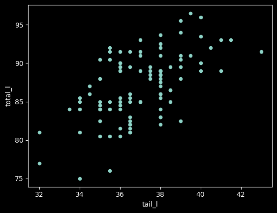
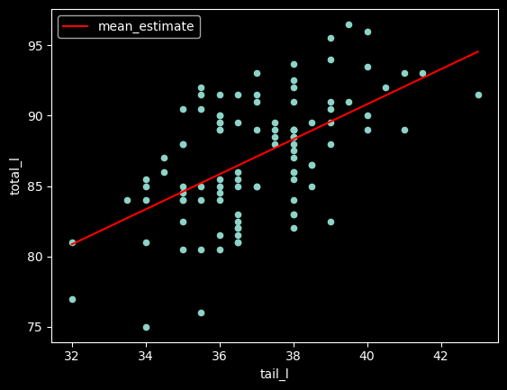
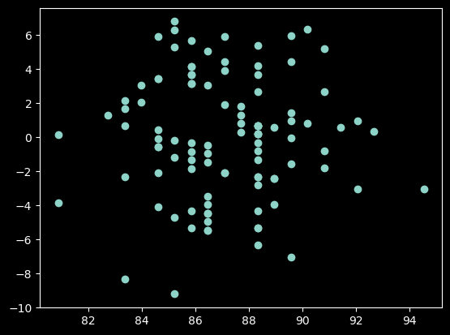
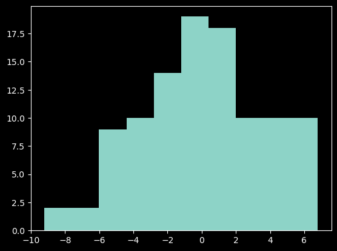

import pandas as pd
import numpy as np
import matplotlib.pyplot as pltLinear Regression, Part 1
In this notebook, we’ll review the big ideas behind linear regression.
Linear regression involves a target variable (also called the dependent variable) and some number of explanatory variables (also known as independent variables or predictors). We want to estimate the effect of the explanatory variables on the mean of the target variable, allowing us to understand how changes in the predictors influence the outcome.
For this notebook, we’ll be using the possum dataset from the OpenIntro Statistics textbook. We’ll be using the total length (total_l) variable as our target.
possums = pd.read_csv("../data/possum.csv")
possums.head()| site | pop | sex | age | head_l | skull_w | total_l | tail_l | |
|---|---|---|---|---|---|---|---|---|
| 0 | 1 | Vic | m | 8.0 | 94.1 | 60.4 | 89.0 | 36.0 |
| 1 | 1 | Vic | f | 6.0 | 92.5 | 57.6 | 91.5 | 36.5 |
| 2 | 1 | Vic | f | 6.0 | 94.0 | 60.0 | 95.5 | 39.0 |
| 3 | 1 | Vic | f | 6.0 | 93.2 | 57.1 | 92.0 | 38.0 |
| 4 | 1 | Vic | f | 2.0 | 91.5 | 56.3 | 85.5 | 36.0 |
Let’s start by using the tail length (tail_l) as our predictor variable.
For linear regression, we assume that the mean value of the total length can be estimated using a linear function of the predictor variables:
\[Mean(total_l) = \beta_0 + \beta_1(tail_l)\]
To see if this looks plausible, let’s inspect a scatterplot.
possums.plot(kind="scatter", x="tail_l", y="total_l");
Question: Does the model above look reasonable?
- the shape vaguely looks like a positive association between the two variables.
Now, we need to estimate the values of the coefficients, \(\beta_0\) and \(\beta_1\). For this, we’ll use the statsmodels library.
import statsmodels.formula.api as smfTo specify our model, we need to use a patsy formula. The recipe is target variable ~ predictor variables.
We’ll use the ols function and go ahead and fit the model. (ols = ordinary least squares)
lr_total_tail = smf.ols("total_l ~ tail_l", data=possums).fit()To see the results, we can inspect the params.
lr_total_tail.paramsIntercept 41.037130
tail_l 1.244307
dtype: float64Substituting these estimates into the model, we get
\[Mean(total_l) = 41.037130 + 1.244307(tail_l)\]
Question: How do we interpret the meaning of the coefficint for the tail length (if tail length and total length are measured in cm)?
- increasing the tail length by one unit increases the total length by an average of 1.244… units. Positive valvue indicates positive association between variables
If we want to overlay the estimates on the scatterplot, we can use the predict method. We need to provide a DataFrame that has the correct columns.
pred_df = pd.DataFrame(
{
'tail_l': np.linspace(start=possums['tail_l'].min(), stop=possums['tail_l'].max())
}
)
pred_df['mean_estimate'] = lr_total_tail.predict(pred_df)
pred_df.head(2)| tail_l | mean_estimate | |
|---|---|---|
| 0 | 32.00000 | 80.854961 |
| 1 | 32.22449 | 81.134295 |
Let’s verify the first estimate.
tail_l = 32
estimate = lr_total_tail.params['Intercept'] + lr_total_tail.params['tail_l']*tail_l
estimate80.85496097833756Now, let’s plot the estimates with the original dataset.
fig, ax = plt.subplots()
possums.plot(kind="scatter", x="tail_l", y="total_l", ax=ax)
pred_df.plot(kind="line", x="tail_l", y="mean_estimate", color="red", ax=ax);
Inference for Linear Regression
At this point, it is important to remember that the coefficients that we got are merely estimates, which means that there is inherent uncertainty in those values.
A common way to quantify this uncertainty is through a confidence interval, which gives a plausible range of values for the estimated parameters, given the observed data.
We can view the confidence interval for the estimates by inspecting the model summary output.
lr_total_tail.summary()| Dep. Variable: | total_l | R-squared: | 0.320 |
| Model: | OLS | Adj. R-squared: | 0.313 |
| Method: | Least Squares | F-statistic: | 47.99 |
| Date: | Thu, 17 Oct 2024 | Prob (F-statistic): | 3.94e-10 |
| Time: | 18:10:52 | Log-Likelihood: | -278.97 |
| No. Observations: | 104 | AIC: | 561.9 |
| Df Residuals: | 102 | BIC: | 567.2 |
| Df Model: | 1 | ||
| Covariance Type: | nonrobust |
| coef | std err | t | P>|t| | [0.025 | 0.975] | |
| Intercept | 41.0371 | 6.657 | 6.165 | 0.000 | 27.833 | 54.241 |
| tail_l | 1.2443 | 0.180 | 6.927 | 0.000 | 0.888 | 1.601 |
| Omnibus: | 1.679 | Durbin-Watson: | 0.936 |
| Prob(Omnibus): | 0.432 | Jarque-Bera (JB): | 1.488 |
| Skew: | -0.157 | Prob(JB): | 0.475 |
| Kurtosis: | 2.505 | Cond. No. | 705. |
Notes:
[1] Standard Errors assume that the covariance matrix of the errors is correctly specified.
This says that, given the observed data, it is plausible that the effect of a one-unit change in tail_l could be as small as 0.888 or as large as 1.601.
We might also ask whether the effect of tail_l is statistically significant or is the observed effect could be attributed solely to random sampling error.
This can be done either by checking whether the confidence interval contains 0 or by inspecting the p-value associated with tail_l. Since the p-value is small, we can conclude that the effect is statistically significant.
Assumptions of Linear Regression
In order to rely on the confidence interval and p-values, we do need to check the assumptions of linear regression.
The assumptions can be remembered using the acronym LINE:
- There is a Linear relationship between the predictors and mean of the target.
- The errors are Independent.
- The errors are Normally distributed.
- The errors have Equal variance.
The first one we can check by inspecting the scatterplot of the predictors against the target variable.
The second assumption has more to do with understanding the data generation process. In this case, if we assume that we are working with a simple random sample, we can feel good that it is satisfied.
For the third and fourth, we can inspect a plot of the errors.
plt.scatter(lr_total_tail.fittedvalues, lr_total_tail.resid);
- want to see no pattern.
plt.hist(lr_total_tail.resid);
import statsmodels.stats.api as smsTo test for normality, we’ll use the Jarque-Bera test.
The Jarque-Bera test statistic tests the null that the data is normally distributed against an alternative that the data follow some other distribution.
sms.jarque_bera(lr_total_tail.resid)(1.4879463321451836,
0.47522202358833565,
-0.15719094353814872,
2.505493923623391)The second component is the p-value. In this case, there is not enough evidence to conclude that the residuals are non-normal.
To test that there is equal variability in the residuals, we can use the Breusch-Pagan Lagrange Multiplier test for heteroscedasticity which tests the hypothesis that the residual variance does not depend on the predictor variables.
sms.het_breuschpagan(lr_total_tail.resid, lr_total_tail.model.exog)(1.2833100363788184,
0.25728449603965503,
1.2743559372580988,
0.2615991382513888)Again, the p-value is the second component. We don’t have enough evidence to conclude that this assumption is violated.
Goodness of Fit
Another way we can analyze our model is by looking at the goodness of fit or how well the model’s predicted values matched the observed data.
One way we can measure this is the R-squared value, which compares the variance of the residuals to the variance in the target variable. It is the proportion by which the variability in the target is reduced by using the estimate from the model. It is often phrased as the proportion of the variability in the target that could be explained by the predictor variables.
We can calculate it ourselves:
possums['total_l'].var()18.580836445108282lr_total_tail.resid.var()12.635807928869479- this looks like an approximate reduction of about 1/3
(possums['total_l'].var() - lr_total_tail.resid.var()) / possums['total_l'].var()0.31995483808286423Or by inspecting the rsquared attribute.
lr_total_tail.rsquared0.31995483808286485A model that has no residuals would have an R-squared value of 1 and a model which estimates using the overall mean would have an R-squared value of 0.